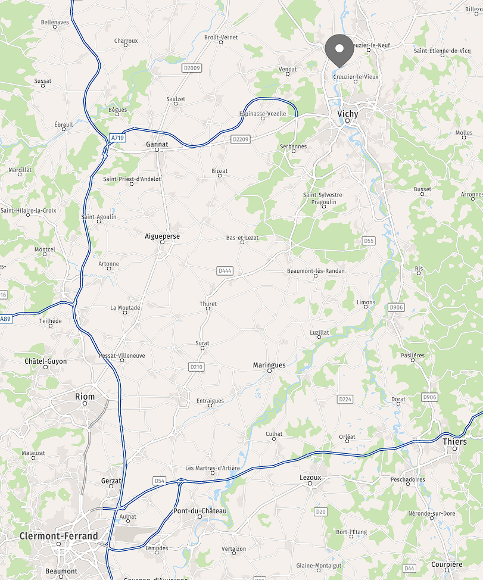

Localisation géographique
Axis Solution se trouve à l’ouest de la région Auvergne-Rhône-Alpes et au sud de l’Allier, au nord de Clermont-Ferrand dans la commune de Creuzier-le-Vieux, située dans le pôle urbain de Vichy.
Cette position est avantageuse pour l’entreprise car située à proximité du centre de Vichy. La PME peut accueillir des acheteurs et faciliter les déplacements de ses techniciens vers Clermont-Ferrand ou Lyon grâce aux grands axes autoroutiers.
Historique
La société Axis Solutions a été créée le 2 juillet 1997 par Marc Donsimoni et a été rachetée en juin 2023 par Nicolas Barathon et Lionel Raymond, dirigeants du groupe Hélios.
Organigramme
- Sébastien Pothier - Directeur de l’exploitation
- Benoit Gibbe - Responsable du pôle Développement
- Mathieu Rodriguez - Responsable du pôle Technique
- Nathalie Léonardon - Commerciale du pôle Logiciel
- Jérôme Chevaux - Commercial du pôle Technique
- Gaële Etchemaîte - Responsable administrative
- Léa Duhamel - Chargée de communication
Classification de l’entreprise
Axis Solution est une PME du secteur tertiaire qui exerce une activité commerciale sous la forme juridique d’une SAS (Société par Actions Simplifiées).
Activités de l’entreprise
Axis Solutions est spécialisée dans les services informatiques, notamment :
- Le développement de logiciels sur mesure
- La gestion de parcs informatiques
- La cybersécurité et l’infogérance des serveurs
- L’assemblage et la configuration d’ordinateurs adaptés aux besoins clients
L’entreprise cible principalement les bureaux d’études, les sociétés du bâtiment et les PME nécessitant des solutions informatiques performantes.